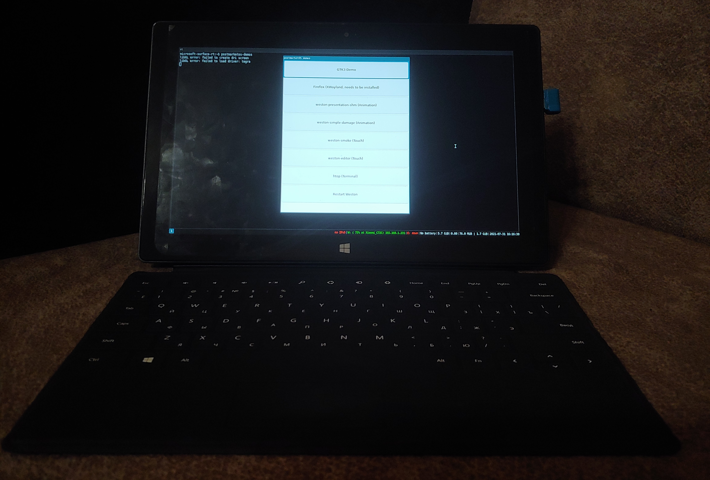

Microsoft Surface RT (microsoft-surface-rt)
|
 Surface RT running postmarketos-demos | |
| Manufacturer | Microsoft |
|---|---|
| Name | Surface RT |
| Codename | microsoft-surface-rt |
| Released | 2012 |
| Category | testing |
| Original software | Windows RT |
| Original version | 8 |
| Hardware | |
| Chipset | Nvidia Tegra 3 (T30) |
| CPU | 4x 1.3 GHz Cortex-A9 (no support for L2 cache in kernel) |
| GPU | GeForce ULP |
| Display | 1366x768 IPS |
| Storage | 32 / 64 GB |
| Memory | 2 GB |
| Architecture | armv7 |
{kind=link}
| USB Networking |
Unavailable
|
|---|---|
| Flashing |
Unavailable
|
| Touchscreen |
Works
|
| Display |
Works
|
| WiFi |
Works
|
| FDE |
Works
|
| Mainline |
Works
|
| Battery |
Works
|
| 3D Acceleration |
Partial
|
| Audio |
Partial
|
| Bluetooth |
Broken
|
| Camera |
Broken
|
| GPS |
Unavailable
|
| Mobile data |
Unavailable
|
| SMS |
Unavailable
|
| Calls |
Unavailable
|
| USB OTG |
Unavailable
|
| NFC |
Unavailable
|
| Accelerometer |
Works
|
|---|---|
| Magnetometer |
Works
|
| Ambient Light |
Works
|
| Proximity |
Unavailable
|
| Hall Effect |
Works
|
| Barometer |
Unavailable
|
| Power Sensor |
Unavailable
|
| Camera Flash |
Unavailable
|
|---|---|
| Keyboard |
Works
|
| Touchpad |
Works
|
| USB-A |
Works
|
| HDMI/DP |
Works
|
| Ir TX |
Unavailable
|
| Ir RX |
Unavailable
|
| Stylus |
Unavailable
|
| Haptics | |
| Ethernet |
Unavailable
|
| FOSS bootloader |
Partial
|
| Primary Bootloader |
Partial
|
|---|---|
| Secondary Bootloader |
Partial
|
| Mainline |
Works
|
| Internal Storage |
Works
|
| SD card |
Works
|
| USB Host | |
| USB Peripheral |
Works
|
| Display |
Works
|
| Keyboard |
Broken
|
| Buttons |
Works
|
|
This device is based on the Tegra 3. See the SoC page for common tips, guides and troubleshooting steps |
| NOTE: However the table says you can daily drive this device, there are still some not implemented features: L2 Cache, CPU Idle, UHS MicroSD Cards, Suspend (suspend itself works and wakes up quickly, but it works with both CPU and Core voltages enabled and DRAM is not in self-refresh mode). This is all because of EFI Firmware which wants kernel to control these CPU and regulator features through ACPI, and we use Device-Tree instead. There is work in progress to bypass EFI at runtime and control these features in the kernel. |
Contents
How to boot from USB
Power on the device with Volume Down button pressed.
Installation
Preparation
Enable test signing and install yahallo to disable secure boot.
See the instruction on OpenRT GitBook.
| Note: Don't try to boot pmOS installation from USB when you already have installation on eMMC. It does not work this way. Although you still can boot pmOS ondev installer even if you have installed OS on eMMC. |
| Note: Device can't boot from a SD card. Boot with an USB. |
Installation on USB storage
Follow Pmbootstrap article. Do a normal SD card installation using USB storage as a target.
Installation on eMMC
- Follow Pmbootstrap article until
pmbootstrap installcommand. - Use
pmbootstrap install --no-sshd --ondev --sdcard=/dev/sdX, where X is the number of your USB storage block device.- Check other
pmbootstrap installarguments, you may find something usable.
- Check other
- Boot from the USB storage and follow on-device installer.
- Disconnect the USB storage before booting into installed system, otherwise installer will be booted from USB again.
WiFi
The WiFi firmware will go to sleep and break after some time (12 hours or less) with driver log talking about command timeout. The WiFi interface (mlan0) will vanish and trying to unload and reload the driver will block forever at trying to unload it. So the only way to recover is to hard reset.
It seems this can be avoided by disabling power management on the WiFi device. With NetworkManager this is nmcli connection modify <SSID> 802-11-wireless.powersave disable, otherwise iw dev mlan0 set power_save off
If this isn't enough, another thing to try is to disable and re-enable the WiFi device every so often through a cronjob:
>/etc/periodic/hourly/reset-wifi cat <<EOF
#!/bin/sh
ip link set mlan0 down
ip link set mlan0 up
EOF
chmod +x /etc/periodic/hourly/reset-wifi
service crond start
rc-update add crond default
Sound
All outputs (speakers, headphones, HDMI) work, but mics are not supported for now.
U-Boot
This device can run patched mainline U-Boot, see https://github.com/Open-Surface-RT/u-boot.
Primary bootloader
It works as primary bootloader, but SPI is one time programmable. The only way to boot it is fusee-gelee. There were also successful attempts to replace SPI with non-OTP one with flashed U-Boot.
Secondary bootloader
Chainloading from EFI is not yet possible.
Contributors
Kernel, packages
- Jenneron
- CrackTheSurface
- Leander
Etc
- imbushuo (Yahallo exploit for disabling secure boot)
- jwa4 (convenient tool for enabling/disabling Golden Keys and Yahallo exploits)
- TheLorax (server for unofficial prebuilt images)
Users owning this device
- Arnavion
- Chaosleo07
- InterstellarTaurus
- Jenneron
- Jja2000 (Notes: Hopeful on a quicker device)
- Little-miss-synth
- LogicalErzor
- Veast (Notes: Currently running PostmarketOS!!!)
- Wangxiaohu (Notes: running Raspbian now for more package selection)
• Retrocountry: i dont use it but i have in the past